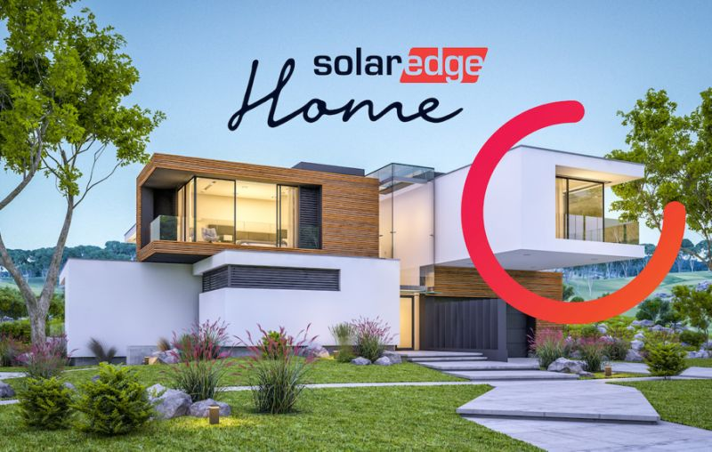

SolarEdge Technologies are a solar technologies company headquartered in Israel. SolarEdge sell a combination of home, industrial and utility-scale solar solutions including modules, batteries, inverters, power optimisers and EV chargers.
SolarEdge technologies' stock - SEDG - has risen 55.45% in 2026 (year-to-date) with a particularly sharp rise in value from 12th March onwards. In this data story, I seek to understand the turbulent story of the SEDG stock and focus on the particular moments when key price swings occurred - to better forecast future events.
SEDG (SolarEdge Technologies) has experienced high volatility since it became publicly listed. There have been frequent price swings and a common indicator for a stock to experience strong buying or selling momentum often occurs when an earnings report is released. Here, I will analyse whether specific earnings reports have led to price swings. This may help to reveal what SolarEdge investors truly care about.
Unlike previous projects, I have now used the report date for SEDG's quarterly financials to determine the change in total revenue over time. SEDG has seen a steady increase for much of its history in reported revenue, however, this must be caveated by a sharp drop reported in late 2023 and early 2024.
I researched the SolarEdge earnings call transcripts using Seeking Alpha from November 2nd 2023 (immediately after the first big drop in revenue, reporting Q3 2023) and the transcript from February 20th 2024 (after the second big drop in revenue, reporting Q4 2023). Zvi Lando (the CEO at the time) stated that 2022 had seen an 'unprecedented surge in demand' for SolarEdge products which he attributed to 'geopolitical' reasons. This potentially aludes to the Russia-Ukraine conflict which began 24th February 2022, leading to wide-scale sanctions on Russian oil and gas exports - potentially causing more countries to invest heavily in solar technology.
On the subject of falling revenues in Q3 2023, Lando stated that market demand 'began to slow' due to distributors facing financial challenges - leading to cancellations and push out ourders. In response to the initial high demand (SolarEdge saw record level shipments in Q1-Q2 of 2023), SolarEdge had built infrastructure to support anticipated sales growth - however this created a 'burden' on near-term margins. Lando pointed to changes in different governmental policies across Europe negatively impacting SolarEdge, whilst the US and rest of the world saw no 'significant change' and were 'relatively stable' respectively. This demonstrates that the 29% quarter on quarter decline in European solar revenues was potentially the most important factor.
Lando also addressed the 'ongoing situation in Israel' - implicating the October 7th attacks from Hamas (an Iranian proxy militia) on Israel and - by extension - the Israeli government's subsequent military response. Although he stated that the conflict had 'no disruption' on manufacturing and product delivery, 11% of the Israel-based workforce (6% of the global workforce) had been called up for reserve military duty.
Lando mentioned that inventory levels across Europe were still elevated, due to lower sell-through (Units Sold / Inventory + Units Received). Interestingly, Lando mentioned that SolarEdge usually see a 'seasonal decline' - alluding to the onset of Winter. However, this was 'more pronounced' in late 2023 due to the 'early onset of winter', hinting potentially that climate-change itself may disrupt demand for solar technology. Again, to justify falling revenue, Lando alluded to the relatively unchanged dynamics in the US and rest of the world compared to Europe.
To produce this plot, I identified significant market price swings following earnings calls (p < 0.05) at 10 day intervals following quarterly financials being released. Using these significant price swings, I created linear models and scaled their slope coefficients using a Z transformation. This enabled me to bring slope coefficients onto a similar scale to the log scaled change in quarterly revenue. For each log scaled change in revenue between quarters, I then plotted the Z normalised price swing.
Interestingly, no significant linear model can be plotted between quarterly revenue changes announced and swings in market value. Even for the more extreme decreases in quarterly revenue - such as those discussed above - the investor response was not immediate and sudden.
On 20th December 2021, SEDG became the first Israeli company to be featured on the S&P 500 index. This marked SEDG becoming one of the 500 largest US-traded companies.
However, following a disasterous Q2 2023 report, the stock plunged in value. It was shortly removed from the S&P 500 on the 18th December 2023 - almost 2 years to the date it was added.
It lost 43% of its value from the start of the year by September in 2023 - following the August earnigns call. I conducted a brief literary analysis on the Q2 report to better understand the issues preceding this sudden drop in value.
SolarEdge mentioned in numerous financial statements that the European market slowed down in 2023. In order to verify that the market dynamics had genuinely shifted, I utilised a UK government dataset on renewable projects dataset currently in the approval process. This could serve as a microcosm for wider European market dynamics, particularly representing shifting demand. The graph above measures the number of solar projects seeking approval for each year in the dataset.
From the outset, it appears that 2023 saw record demand overall. However, SolarEdge mentioned that the slowdown occurred mid-way through the year (after riding the tailwinds from 2022), therefore it would be helpful to analyse trends at a higher resolution.
A number of interesting patterns emerge when examining monthly solar project proposals in the UK.
Overall, it is clear that the applications for solar projects to the UK government, can serve as a helpful model to understand the challenging market dynamics facing SolarEdge technologies.
Whilst SolarEdge have showed improving returns so far in 2026, the stock price has recently demonstrated increased volatility due to the ongoing Middle-East conflict.
The release of their Q1 2026 results will be highly illuminating for how well SolarEdge are placed to profit from the current energy disruptions.
On the one hand, SolarEdge had seen successive periods of growth following the Covid-19 pandemic before the outbreak of the Russian invasion of Ukraine. This left them well-placed to continue with this momentum - following their entry into the S&P 500 - and increase revenues in its aftermath. The share price of $271.9 differs starkly from the latest price as of 12/4/26 which is $41.76.
On the other hand, the Russian invasion of Ukraine did not expose the European over-exposure to fossil fuels nearly as much as this ongoing conflict will. Namely, the over-reliance on oil exports passing through the Strait of Hormuz has the capacity to bring into question energy generation, transport and food security globally.
The UK government has already revealed a plan to make plug-in solar available in shops 'within months' according to a press release published on 24th March 2026. As other countries in Europe also follow suit - such as Germany who also are heavily oil dependent - this can have huge ramifications for solar demand.
I personally expect a dramatic rise in multiple solar stocks - including SEDG - in response to this current conflict. With all factors considered, the ramifications from this ongoing conflict in the middle-east looks set to trigger a far greater reaction from governments compared to the Russio-Ukraine conflict in 2022. This post is not intended as financial advice.